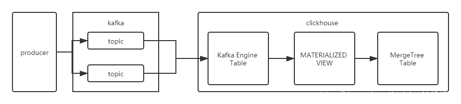

ClickHouse-Kafka引擎，kafka to clickhouse详细教程

1.创建存储消费数据表
- 创建kafka_readings用于接收Kafka的数据
- MergeTree 指定创建表的引擎
- PARTITION BY 指定我们的分区数据
- ORDER BY 指定我们的排序即索引
- dt字段为具体业务时间。
CREATE TABLE kafka_readings (
source String,
deviceId String,
ts DateTime
)Engine = MergeTree PARTITION BY toYYYYMMDD(ts) ORDER BY (ts);
2.创建消费Kafka数据表
- kafka_broker_list kafka消费集群的broker列表
- kafka_topic_list 消费kafka的Topic
- kafka_group_name kafka消费组
- kafka_format 消费数据的格式化类型，JSONEachRow表示每行一条数据的json格式，如果需要输入嵌套的json，设置input_format_import_nested_json=1。更多：https://clickhouse.tech/docs/en/interfaces/formats/
- kafka_skip_broken_messages 表示忽略解析异常的Kafka数据的条数。如果出现了N条异常后，后台线程结束，Materialized View会被重新安排后台线程去监听数据
- kafka_num_consumers 单个Kafka Engine 的消费者数量，通过增加该参数，可以提高消费数据吞吐，但总数不应超过对应topic的partitions总数
CREATE TABLE kafka_readings_queue (
`message` String
)
ENGINE = Kafka
SETTINGS kafka_broker_list = 'xxx',
kafka_topic_list = 'appupload',
kafka_group_name = 'test_new_ck',
kafka_format = 'JSONAsString',
kafka_skip_broken_messages = 20000,
kafka_num_consumers = 1;
3.创建物化视图合并表传输数据，导入到ClickHouse
CREATE MATERIALIZED VIEW kafka_readings_view TO kafka_readings AS
SELECT visitParamExtractRaw(message,'source') as source
, visitParamExtractRaw(visitParamExtractRaw(message,'msg'),'deviceId') as deviceId
, FROM_UNIXTIME(intDiv(visitParamExtractInt(JSONExtractString(visitParamExtractRaw(message,'msg'),'message',1),'start'),1000)) as ts
FROM kafka_readings_queue;